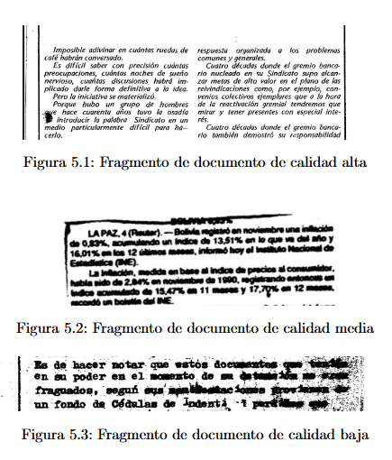
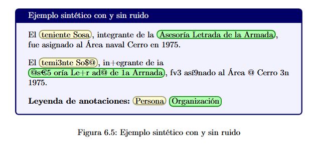
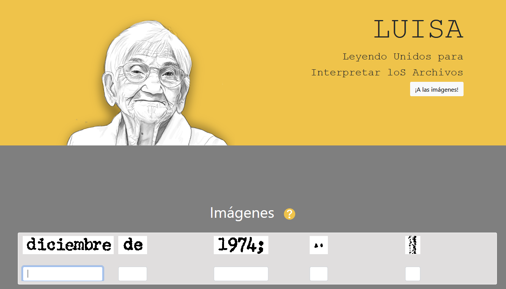

Memoria abierta
Un proyecto de la Facultad de Ingeniería usa modelos abiertos para leer los archivos de la dictadura. La decisión es técnica: los documentos no pueden salir del país y su lectura tiene que poder auditarse.
El archivo
El Archivo Berrutti reúne documentos de inteligencia militar del período dictatorial y predictatorial uruguayo. El Estado lo recuperó en 2006, en el ex Centro General de Instrucción para Oficiales de Reserva. La colección abarca de 1968 a 2004 y lleva el nombre de la ministra que impulsó su recuperación: Azucena Berrutti.
La mayor parte llegó en unos 1.500 rollos de microfilm. Cada rollo tiene miles de páginas: actas de detención, allanamientos, escuchas, fichas, recortes de prensa y comunicados oficiales. Son más de dos millones de documentos.
El archivo mezcla documentos de la Dirección Nacional de Información e Inteligencia, el Órgano Coordinador de Operaciones Antisubversivas y el Servicio de Información de Defensa. El papel se guardó durante años sin ventilación y con humedad. Muchas imágenes quedaron veladas, manchadas o partidas. Para una persona es difícil leerlas; para un programa de reconocimiento óptico, mucho más.
CRUZAR empieza por el archivo. Antes de extraer nombres hay que reconstruir el texto, y esa reconstrucción es lenta y depende de mucha gente.

El proyecto
El trabajo es una tesis de grado de Ingeniería en Computación de la UdelaR. La hicieron Natalie Alaniz Ferreira, Facundo Díaz Rodríguez y Agustín Martínez Acuña, con la tutoría de Aiala Rosá e Ignacio Sastre. Se defendió en 2025, en el Instituto de Computación (InCo).
El prototipo recibe una imagen, produce texto y marca personas, organizaciones y lugares. La meta era que el archivo quedara legible para quien lo investiga.
El prototipo incluye una aplicación web para probar el pipeline de punta a punta con documentos reales. Se presentó en Ingeniería de Muestra. Agustín empezó después una maestría, codirigida por Aiala Rosá y Lorena Etcheverry, para seguir con el tema.
El informe se publica con licencia CC-BY 4.0. El proyecto es de la Facultad de Ingeniería, no de CHAISH: esta página lo estudia y lo atribuye.
- AUTORES
- Natalie Alaniz Ferreira
Facundo Díaz Rodríguez
Agustín Martínez Acuña - TUTORES
- Aiala Rosá
Ignacio Sastre - LICENCIA
- CC-BY 4.0
LA TESIS
Un archivo que no sale del país solo se puede leer con modelos locales, y solo se puede auditar con modelos abiertos.
Cómo funciona
El pipeline tiene dos módulos construidos y varias etapas que todavía son plan.
01
Imagen → texto.
El sistema prueba motores tradicionales como Tesseract y MonkeyOCR, y modelos multimodales como Llama 3.2 Vision y MiniCPM-o 2.6. Un preprocesamiento recorta bordes y separa bloques para transcribir cada uno por separado.
02
Texto → entidades.
Modelos de la familia BERT, ajustados al dominio, marcan personas, organizaciones y lugares. Como hay pocos ejemplos anotados, el equipo generó datos sintéticos con Llama 3.1 y QwQ 32B, y les agregó ruido para imitar los errores del OCR.

03
Entidades → cruces.
La tesis no llega hasta acá: CRUZAR desarrolla después la correferencia, las relaciones, los eventos y el grafo de conocimiento. El prototipo deja el texto y las entidades listos para esa etapa.
04
Validación humana.
LUISA convoca a personas para transcribir recortes pequeños; el sistema compara varias respuestas y reconstruye el texto. Esa anotación alimenta el entrenamiento y controla la calidad.
Los resultados: BLEU de 0,85 en documentos fáciles y 0,45 en los difíciles. En entidades, F1 macro de 0,51 contra 0,26 del baseline. En documentos simples, Tesseract sigue siendo competitivo; en los dañados, los modelos multimodales sacan ventaja.
La condición abierta
El proyecto usa modelos abiertos porque necesita ejecutar el sistema en infraestructura propia y someterlo a revisión. La apertura, acá, es una condición técnica.
Modelos abiertos
El equipo trabajó con pesos descargables: Llama 3.2 Vision, MiniCPM-o 2.6, modelos BERT y Qwen2.5-VL. Un modelo al que solo se llega por API no sirve para documentos confidenciales. La apertura que importa acá es la que permite ejecutar el modelo en una máquina propia.
Pero abierto no es una sola cosa. Solaiman describe seis niveles, de completamente cerrado a completamente abierto. Mozilla lo dice sin vueltas: open source y open weights son afirmaciones distintas, y ningún modelo de su tabla publica el corpus completo. Descargar pesos no equivale a poder reproducir el entrenamiento.
Datos y anotación
LUISA es la puerta para que cualquiera colabore: muestra recortes pequeños, recibe transcripciones y las cruza. Con esa ayuda se procesaron 1.500 páginas del archivo. La tesis se publica con CC-BY 4.0, así que el método y los resultados quedan disponibles para revisión.
Sin ejemplos correctos el modelo no aprende, y construir ese corpus fue gran parte del trabajo.
Infraestructura local
Los experimentos corrieron en ClusterUY, el centro nacional de supercomputación, con una GPU A40 de 48 GB. Los documentos se procesan acá: nada sale a servidores externos. Esa decisión cuesta potencia y tiempo, y se sostiene por confidencialidad.
En la entrevista, Aiala Rosá lo dice sin vueltas. «Todo esto va a ser local y la utilización de modelos que vamos a hacer va a ser siempre de código abierto».
Evaluación y gobernanza
Abrir el código no alcanza si nadie mide lo que produce. El equipo reporta BLEU, precisión, recall y F1 por clase, y documenta los errores. Esa evaluación es parte de la apertura.
AGESIC y la UAIP publicaron en 2024 recomendaciones de transparencia algorítmica. La Ley 18.381 ya establece que la información sobre algoritmos públicos es pública por defecto. El dossier no pide una ley nueva: pide usar la que existe.
CITA
«Todo esto va a ser local y la utilización de modelos que vamos a hacer va a ser siempre de código abierto».
Los límites
01
El sistema es un prototipo. Un F1 de 0,51 en entidades significa que todavía se le escapan nombres y que le cuesta identificar organizaciones y lugares. En validación, las personas fueron la clase mejor reconocida (0,51); las organizaciones quedaron en 0,37 y los lugares en 0,29.
02
El OCR también falla. En documentos difíciles, el BLEU baja a 0,45. Los modelos multimodales pueden alucinar: agregan texto que no está en la imagen. El equipo lo evita con prompts que prohíben corregir o completar, pero el riesgo no desaparece.
03
Hay límites de confidencialidad. Las herramientas más potentes están en servidores externos y no se pueden usar. La conexión con la base de LUISA no se automatizó por políticas de CRUZAR: el acceso a los datos requiere autorización.
04
Hay un límite de diseño: el proyecto no reemplaza a historiadores. Acelera la búsqueda; la interpretación sigue siendo humana. El equipo también documenta un sesgo en la generación de datos sintéticos: los lugares dependen de diccionarios incompletos.
05
Abierto no significa seguro. Un modelo local puede fallar igual, y un archivo abierto puede exponer datos sensibles. La apertura agrega auditoría, no garantías.
Qué sigue
Un archivo nacional que solo se puede leer con modelos ajenos no es soberano: es alquiler. La tesis muestra que hay otra forma, más nuestra y menos vistosa.
Tener un modelo propio no basta. IA soberana es poder elegir, auditar y reemplazar el modelo con el que se lee tu propia historia. Eso exige pesos abiertos, datos que se quedan acá y gente que los mantenga. El cómputo también cuenta: sin capacidad local, el archivo vuelve a depender de una API.
Podés colaborar con LUISA transcribiendo recortes. La soberanía también se construye entre tod@s.

Fuentes
-
01
Alaniz Ferreira, Díaz Rodríguez, Martínez Acuña. «Reconocimiento y extracción de entidades a partir de archivos del pasado reciente». Tesis de grado, FIng/UdelaR, 2025.
https://www.colibri.udelar.edu.uy/items/b832a5cc-2c39-4fdb-8ec8-5b84e182e874 -
02
«Inteligencia artificial para investigar los archivos de la dictadura». Entrevista a Aiala Rosá y Agustín Martínez. la diaria, Las ganas, 12/10/2026.
https://www.youtube.com/watch?v=F3TVZnkLGxY -
03
LUISA — Leyendo Unidos para Interpretar loS Archivos. FIC + FIng, UdelaR.
https://mh.udelar.edu.uy/luisa/ -
04
Mozilla. «The State of Open Source AI 2026», vol. 1.1, septiembre de 2026.
https://stateofopensource.ai/state-of-open-source-ai-v1-1.pdf -
05
Solaiman, I. «The Gradient of Generative AI Release: Methods and Considerations». arXiv 2302.04844, 2023.
https://arxiv.org/abs/2302.04844 -
06
AGESIC y UAIP. «Recomendaciones sobre transparencia algorítmica», 17/07/2024.
https://www.gub.uy/agencia-gobierno-electronico-sociedad-informacion-conocimiento/comunicacion/publicaciones/recomendaciones-sobre-transparencia-algoritmica -
07
ClusterUY — Centro Nacional de Supercomputación.
https://cluster.uy/